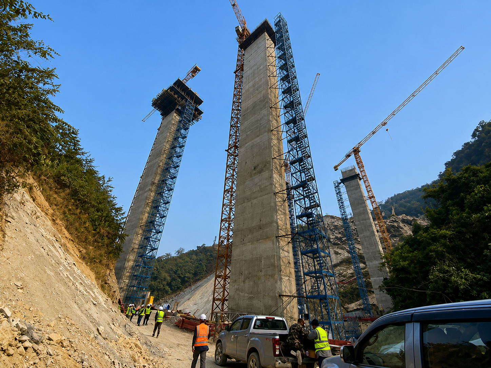
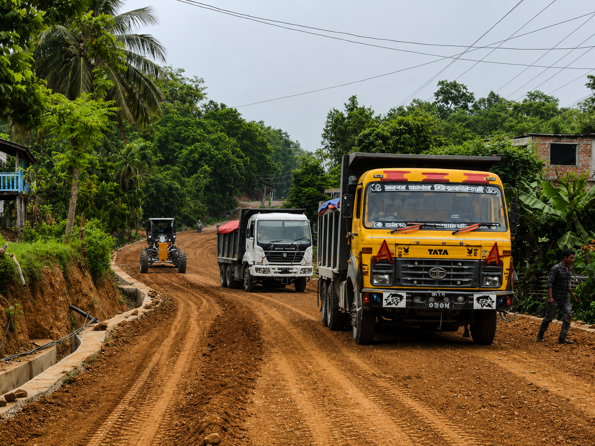
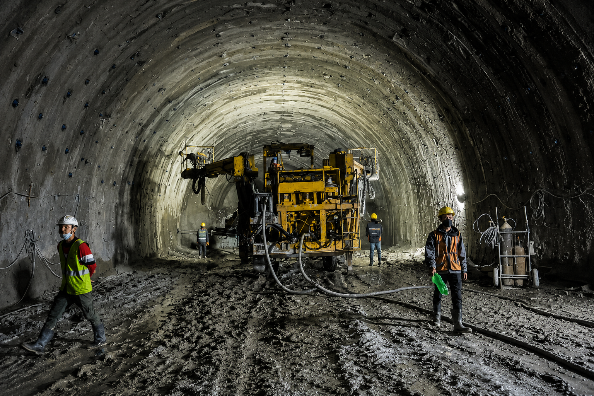
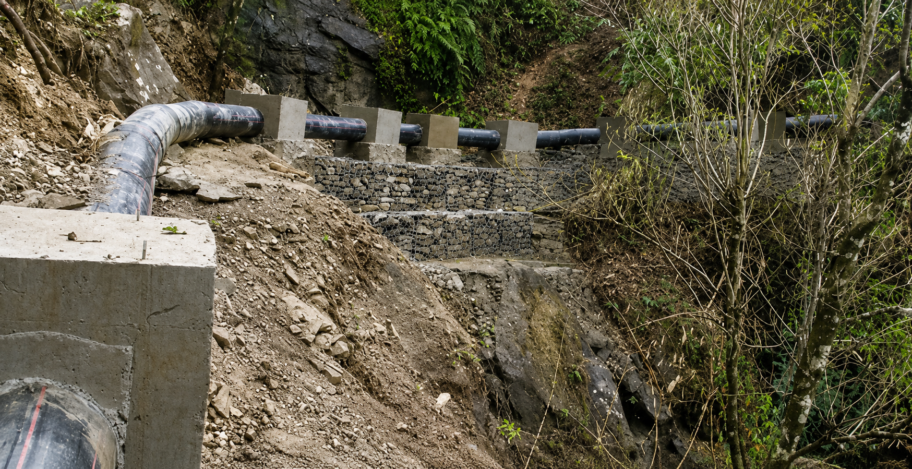
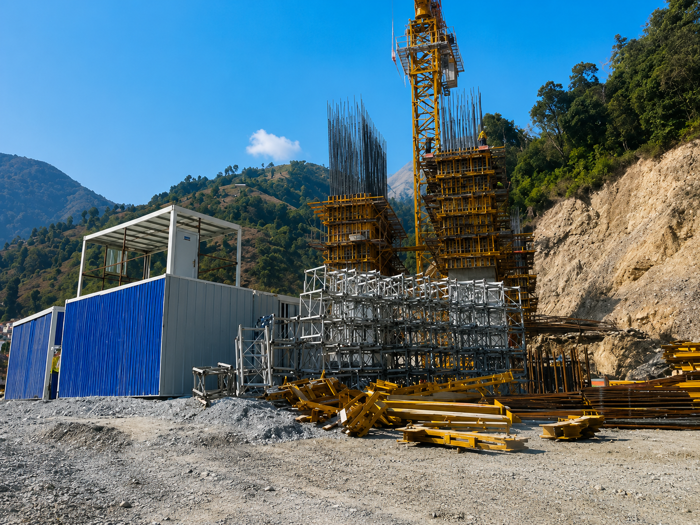
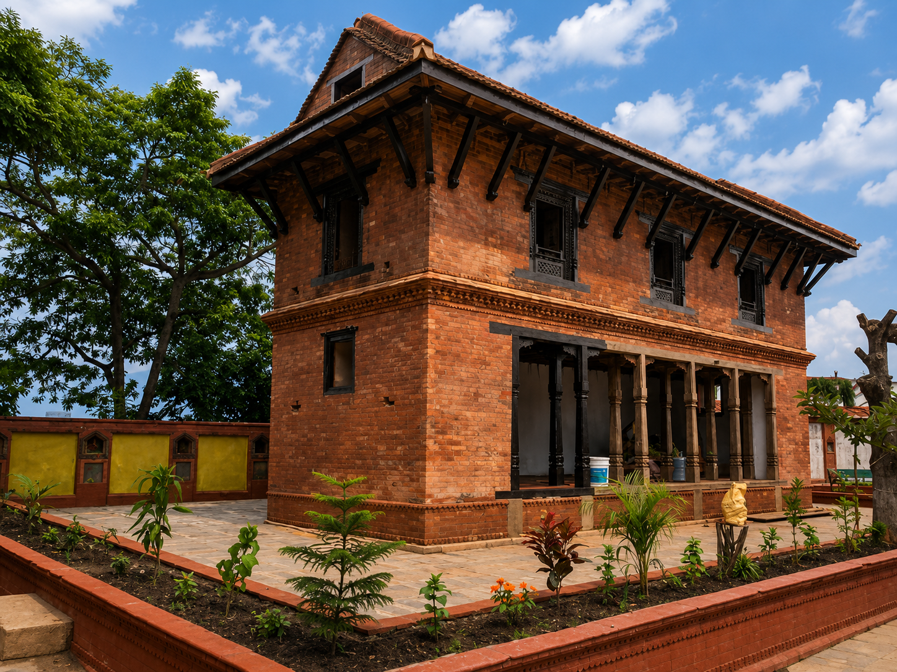
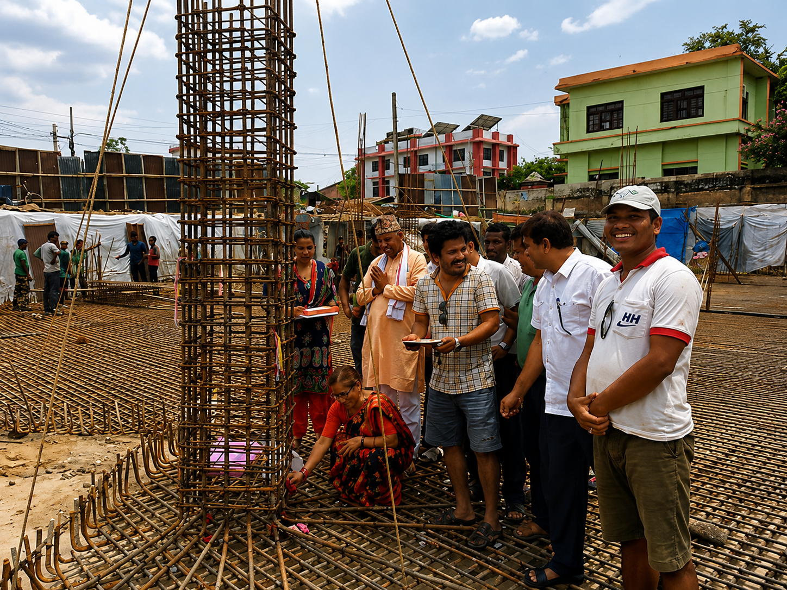

Our work
Projects across the valley
Designed to code, supervised to completion — roads, tunnels, bridges, and homes.

Road
Ring road widening
Pavement design and drainage upgrade, Kalanki–Koteshwor.

Road
Village road upgrade
Gravel-to-blacktop conversion connecting rural wards.

Tunnel
Mountain tunnel highway
Bore design and geotechnical supervision, Naubise–Mugling.

Tunnel
Underground water tunnel
Headrace tunnel supervision for a valley water-supply link.

Bridge
Steel truss river bridge
Structural design and pier supervision at the Bagmati crossing.

Temple
Temple construction
Traditional pagoda design with modern seismic reinforcement.

Residential
House & building construction
Individual homes and multi-storey buildings across the valley.